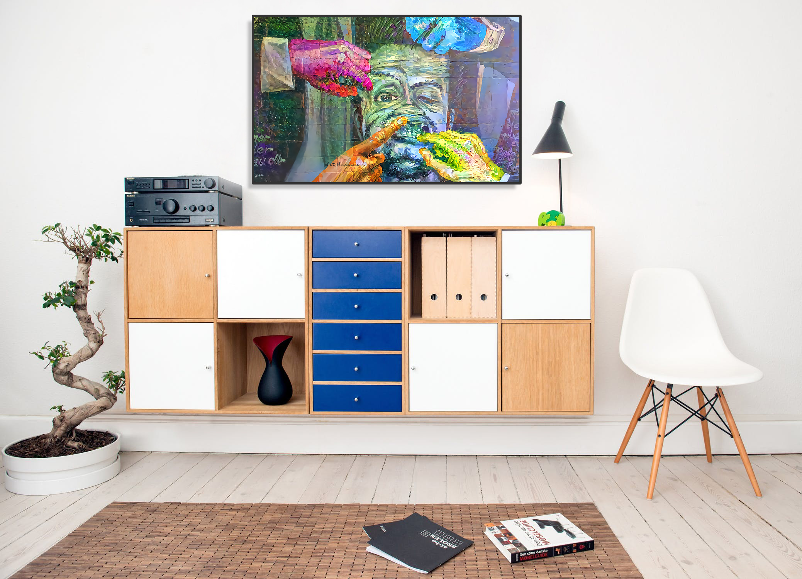
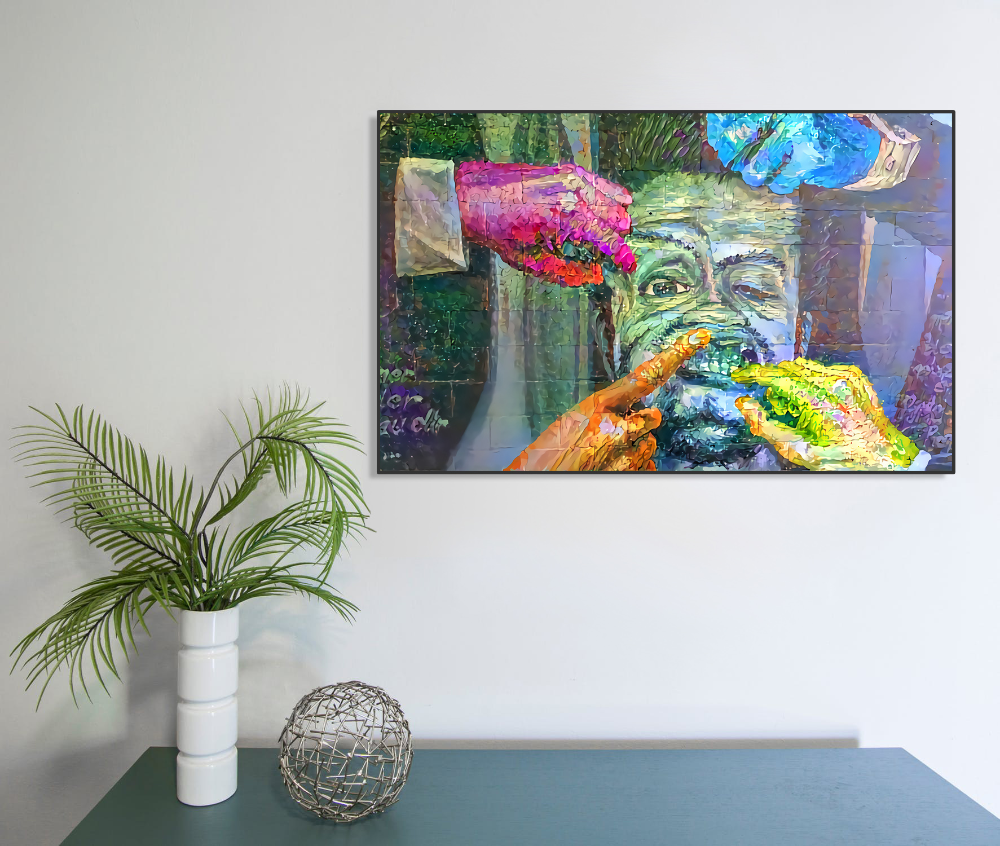
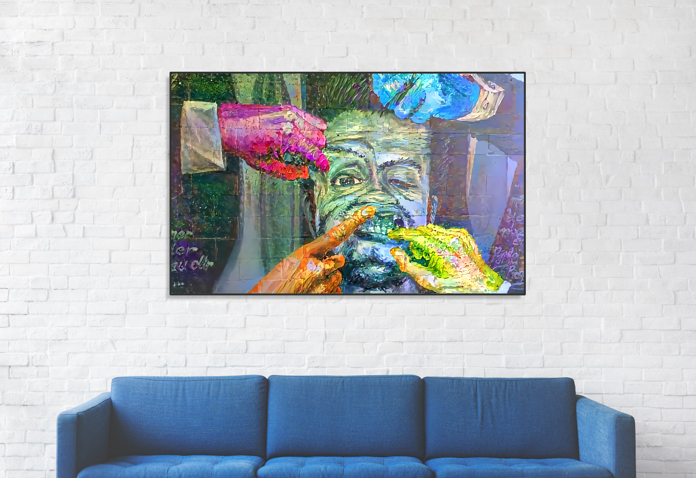

Artes Face
This ai art is signed by Art Supreme. It is made on canvas and it comes with the original Certificate of Authenticity.
By replaying the work for each exhibition and pushing the evocative power of the work a little further, Artes Face focuses on the idea of ‘public space’ and more specifically on spaces where anyone can do anything at any given moment: the non-private space, the non-privately owned space, space that is economically interesting.
€280 — Contact to purchase